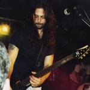
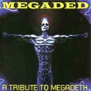
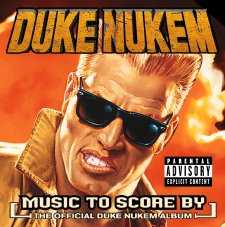

June 24 George, WA The Gorge
June 26 Sacramento, CA Sacramento Valley Amphitheatre
June 27 Concord, CA Concord Pavillion
June 29 Phoenix, AZ Desert Sky Pavillion
June 30 San Bernadino, CA Blockbuster Pavillion
July 1 San Diego, CA Coors Amphipheatre
July 3 Los Angeles, CA Universal Amphitheatre
July 5 Salt Lake City, UT E Center
July 6 Denver, CO Red Rocks Amphitheatre
July 8 Albuquerque, NM Mesa de Sol
July 9 El Paso, NM Don Haskins Center
July 11 Dallas, TX Starplex Amphitheatre
July 12 San Antonio, TX Freeman Coliseum
July 14 Monterey, Mexico Auditorio Coca- Cola
July 15 Mexico City, Mexico Sports Palace
July 18 Houston, TX Woodland Pavillion
July 19 New Orleans, LA UNO Lakefront Arena
July 21 Birmingham, AL Oak Mountain Amphitheatre
July 22 Memphis, TN Mud Island Amphitheatre
July 23 Little Rock, AR Riverfest Amphitheatre
July 25 Charlotte, NC Blockbuster Amphitheatre
July 26 Raleigh, NC Walnet Creek Amphitheatre
July 28 West Palm Beach, FL Mars Music Amphitheatre
July 29 San Juan, Puerto Rico Luis Munoz
Aug 1 Virginia Beach, VA GTE Amphitheatre
Aug 2 Washington, DC TBD
Aug 4 Scranton, PA Montage Mountain
Aug 5 Hartford, CT Meadows
Aug 6 Rochester, NY Finger Lakes PAC
Aug 7 Saratoga Springs, NY SPAC
Aug 9 Boston, MA Tweeter Center
Aug 11 New York, NY Jones Beach Amphitheatre
Aug 12 Holmdel, NJ PNC Bank Arts Center
Aug 13 Camden, NJ E Center
Aug 15 Toronto, Ontario Molson Amphitheatre
Aug 16 Detroit, MI Pine Knob Amphitheatre
Aug 18 Milwaukee, WI Alpine Valley
Aug 19 Minneapolis, MN River,s Edge Park
Aug 20 Chicago, IL The World
Aug 22 Kansas City, MO Sandstone Amphitheatre
Aug 23 St. Louis, MO Riverport Amphitheatre
Aug 25 Atlanta, GA Lakewood Amphitheatre
Aug 26 Nashville, TN AmSouth Amphitheatre
Aug 27 Cincinnati, OH Riverbend Music Center
Aug 29 Indianapolis, IN Deer Creek Amphitheatre
Aug 30 Cleveland, OH Blossom Music Center
Sept 1 Columbus, OH Polaris Amphitheatre
Sept 2 Pittsburgh, PA Post-Gazette Star Lake Amphitheatre
Espero que despues de hacer esta gira se den una vuelta por latinoamerica ¿no?....
¡Detalles sobre el nuevo disco!
¡CHICOS!
Hoy es el primer día real de pre-producción para el próximo álbum de Megadeth.
Ustedes pueden haber oido alguno de los rumores de los fans que nos vieron en Japón y oyeron algunas de estas nuevas melodías. Y aunque yo no canté ninguna letra encima de la música, las ideas estaban correctas en la punta de mi lengua.
Hay una oportunidad remota que que algunos de nuestros amigos del backstage puedan haber pirateado esos shows, así que echen una mirada alrededor. Quisas asi ustedes puedan oír lo que nosotros estamos planeando para el próximo disco.
Permítanme decir esto. Había headbanging en serio, y moshing durante los 30-60 segundos que nosotros tocamos de cada canción.
Más detalles en las próximas semanas (¿parece como si yo estuviera entusiasmado?).
MUSTAINE SEZ
¡ADIÓS CHICOS!
¡¡¿¿¿Al Pitrelli nuevo guitarrista???!!
¡CHICOS!
Bueno, nosotros queremos confirmar el echo de que Al es nuestro guitarrista por ahora.
Nosotros vamos a hacer un anuncio oficial muy pronto, pero esto era más para Al y la banda que para el publico.
Yo mencioné en japonés en el escenario durante la gira algo como "no me importa lo que digan, Al es el nuevo miembro de Megadeth".
Por supuesto que mi japonés no es tan bueno como el del predecesor de Al, pero yo creo que ellos entendieron la idea.
Me gustarían agradecer a los chicos de Savatage y desearles la mejor de las suertes...
MUSTAINE SEZ
¡Chau Chicos!
¿Creo que se entiende no? AL PITRELLI YA ES MIEMBRO DE MEGADETH... ¡¡Suerte Al!!
¡¡Mas sobre la supuesta cancelación...!!
Hola amigos:
Me desperté esta mañana a las 9 AM por Al Pitrelli que me llamo de Phoenix. Son las 6 en Phoenix. El todavía no se habia levantado de la noche anterior ...el recien estava despertandose esa mañana
Yo realmente estoy empezando a preocuparme por él. Megadeth trabaja de las 10 AM a las 6 PM. Yo no se ni que las 10 AM existe. Nosotros nunca trabajamos aqui hasta las 6 PM.
El dice que las cosas van bien en el campo de Megadeth "Reab" (N. de la R.: por reabilitación, van a Phoenix Arizona donde esta la casa de Dave y David a descansar y prepararse para volver luego de gira). Yo supongo que ellos están ensayando para Japón y Corea, ademas preparando algún nuevo material juntos para el disco que siga a a "Risk."
Yo estoy contento de oír que la GIRA SUDAMERICANA NO VA A SUCEDER.
Esto no es nada feliz para Megadeth. Yo odio cuando las Giras se cancelan, cual sea la razón. ¡¡Feliz para mí!!! ¿Por qué? voy a decirles.
Nosotros tenemos algunos shows de TV planeados para TSO a fines de marzo. Al hiva a estar lejos. Yo iba a tener que aprender sus partes de guitarra para las canciones de Beethoven. ¡La canción "Figaro" es un dolor en el culo! ¡¡iba a matarlo!!! Yo podría tocarlo, pero hay simplemente tantas partes que eran diferentes a las mías que tenia que sentarme con la partitura y aprenderlos y yo sé que esto esta mal, pero me alegro que el vaya a estar aqui para sacarme este problema.
¡Lo siento por Dave y Dave... .pero yo estoy contento de que Al este de regreso!
Sin embargo, él dice que las cosas estan bien y que esta excitado de volver a NY para hacer su trabajo para "Poets." Nosotros queremos clarificar algo ...El rumor parese estar volviéndose loco. Todos estan especulando o sino anunciando que él está dejándonos por Megadeth. Esto no es verdad. Él está disfrutando su tiempo en el Megadeth "Rehab" Camp en Phoenix, sin embargo el todavía esta muy metido en Savatage y TSO.
De ahora en mas, por favor miren las noticias oficiales de nosotros aquí Savatage.com o de la prensa de Megadeth, si quieren saver la verdad.
Todo lo demás es especulación. ¡Al no puede esperar volver a comer alguna pizza real y estoy seguro que yo y The Real King podemos asegurarnos que el despertarse a las 6 AM va a desaparecer!!!
Eso es todo lo que yo se por ahora ...las cosas nunca son consolidadas en cualquier faceta de la vida. Por favor piensen antes de anunciar en este post.
gracias,
Chris
Bueno, ¿que me cuentan?, no se, saquen sus concluciones, yo pienso que esta bastante claro que la gira no se hace, y que si se hace Al no va a venir... ¿De donde van a sacar un guitarrista ahora y prepararlo en tan poco tiempo como para afrontar una gira?.
Lo que si en ningún momento se da a entender como que por Al no se hace la gira, ¿por que sera?... espero saberlo alguna ves...
¡¡Volvere con mas!
¡¡No puede ser!! ¿Se cancela la gira por sudamerica?
El tema de la gira venia raro: las fechas eran tentativas, no habia fechas en Argentina, no habia publicidad, notas ni nada... y supuestamente faltaba solo un mes porque venian a principios de Abril.En fin... habra que esperar a ver que pasa y si se confirma o no la cancelación de la gira.
¡¡Primeras Fechas!! - CANCELADO
03/24/00 Sao Paulo BRA CrediCard Hall
03/25/00 Rio De Janeiro BRA ATL Hall
03/26/00 Porto Alegre BRA (a ser anunciado)
03/29/00 Santiago CHL Estadio Chile
¿¿Como que todavia no esta Argentina??, ¡¡maldición!!... A no desesperar, que todavia hay tiempo...
Marty participo en el nuevo album de la banda de los 80's "The View", esta esta formada por Kevin Chalfant (THE STORM, 707), Ross Valory (JOURNEY), Tim Gorman (THE WHO), Prairie Prince (THE TUBES) y Stef Burns (Y & T), tambien participa en el disco con guitarras Josh Ramos (THE STORM/TWO FIRES).
Los temas del disco son: 'Who Ya Gonna Believe?', 'Keys To The City', 'One Track Mind', 'Save It For Me', 'Hard To Get', 'If I Had You Back Here', 'Walk Through The Fire', 'Dreaming Your Life Away', 'Lonely Heart', 'So Long'.
Lo que no se sabe es si Marty va a seguir tocando en esa banda... según el lo paso muy bien y aparentemente lo hizo todavia estando en Megadeth.
Ahora pasemos a unas noticias (una nota mas que noticias)de Catnip que me mando Gabriel Vaianella, ¡leanlo esta bueno! Risk fue lanzado en los Estados Unidos el 31 de agosto de 1999 y fue #16 en el top 200 de la Billboard
¿Se vera en Mtv el video de Breadline?, la verdad de que lo dudo... ¡peroe speremos que si!.
Pablo Galarce (el mas capo de todo Chile) me cuenta: "Por aca en Chile ya esta circulando la propaganda en radios locales de la benida de Megadeth a fines de Marzo y una radio de Chile estaria encargada (para variar por aca) de los derechos de entrevista y transmision del concierto".
Cuando sepan algo de la llegada de Megadeth en su pais (fechas, lugar del concierto, precio de la entrada lo que sea) ¡Haganmelo saber por favor!.
Todavia en la Argentina no hay promos, ni nada sobre la venida de Megadeth, si en algun otro pais se sabe algo ¡havisen!...
¡Volveremos con mas!
¡¡Salio el video de Breadline!!
¡Mirenlo y saquen sus propias concluciones!
¡¡Mas sobre la ida de Marty y mas...!!
"Nosotros estábamos recorriendo mucho durante el tour y él parecia distante, apegado mucho a él, pero yo no pensé nada sobre ello. De repente él dijo: 'yo no quiero hacer esto ya', ‘yo los quiero mucho chicos, pero siento que yo he hecho esto por mucho tiempo y quiero probar algunas otras cosas'. Yo entiendo porque nosotros nos estabamos quemando, nosotros recorrimos Europa y EEUU desde mediados de agosto sin un descanso. El luego se enfermo antes de Navidad, tuvo gripe y una infección viral, y su doctor quería que él descansara." Cuando Friedman optó por no continuar la gira, DeGrasso llamó su viejo amigo AL PITRELLI con quien el ya habia tocado durante años. El voló y Marty le mostró las canciones y los solos. "Yo estoy sorprendido de lo bien que a ido".
Megadeth va a Asia este mes y luego a América del Sur y México en abril (o fines de Marzo) con Pitrelli a bordo, aunque él no es un miembro permanente por ahora. Luego estara con MÖTLEY CRÜE de gira desde mediados de Junio, la banda usara los dos meses de descanso para escrivir algún nuevo material.
El 15 de este mes se estrenara en MTV el nuevo video "Breadline".
El tema elegido es "Breadline", posiblemente sea este por la muy buena aceptación que tuvo en las radios de EEUU.
Volvere con Mas!!!
¡¡MEGADETH VISITA ARGENTINA EN ABRIL!!
Asi que ¡Asi es mis amiguitos!, Megadeth nos visitara en Abril una vez mas... Ahora falta esperar a las fechas definitivas, las fechas en otros paises de latinoamerica y el lugar donde se haran los shows (en Argentina es un verdadero misterio donde se haran)... esto recien empieza...
Volvere con mas!!!
¡Chicos!
A pasado un tiempo desde la ultima ves que hable, y dada la presente situación y la forma en que reaccionarón ustedes con los cambios de alineación pasados, pense que sería mejor no decir nada hasta estar preparado.
La ultima vez que cambiamos un integrante ustedes me acusaron de echar a Nick Menza, nuestro baterista, por tener cancer.
Nick nos havia dicho que tres diferentes doctores le havian diagnosticado cancer, yo le sugeri que se volviera a su casa que mientras tanto buscariamos a un remplazo por lo que faltara de las giras. Marty y yo teniamos decidido que devia de ser reemplazado (es gracioso que Marty estuviera envuelto en esto) al final de la gira de todas maneras.
Milagrosamente Nick fue curado, o mal diagnosticado, o los tres doctores nos mintieron a Marty, a David y a mi. Fijense sino ustedes.
¡Dave hiso esto!, ¡Dave hiso aquello!, piensen ustedes todas las cosas que se dijieron hacerca de mi. ¿Bastante patetico no?.
¿Entonces entienden ahora ustedes porque espere y no dije nada hacerca de lo de Marty?
Marty deja Megadeth para impulsar su carrera en la musica pop. Marty es un amigo, un gran musico, y merece su apoyo en todo lo que haga. Salvenme de sus insultos hacerca de que lo traiga devuelta, o mezclandome a mi en su desición. El escrivio mas en "Risk" que en cualquier otro disco anterior.
Yo se que esto es muy dificil para muchos de ustedes. Pero no pueden dejar de pensar de que lo es aun mas duro para mi. Especialmente cuando me encuentro agredido y involucrado en el proceso. Dejenme volver a hacer mi musica de Megadeth y dejen que Marty haga su musica y todos viviremos felices como antes.
Hemos terminado nuestro tour por EEUU con la asistencia de nuestro guitarrista Al Pitrelli de NY. Marty y Al estuvieron mas de dos semanas viendo cada nota y cada armonia que Al tenia que aprender. En la mañana anterior al primer show que hicimos con Al, David vino y me dijo "Me encuentro en un gran estado de animo" (N de la R.: No lo dijo tan fino). Estoy muy conforme con el desempeño y la forma de tocar de Al como para llevarlo en el resto de las fechas que tenemos que confirmar justo ahora. Y no estamos tomando audiciones.
Tambien James Murphy, un guitarrista de la Bay Area, vino a hacer una audicion para tomar el lugar de marty, recomendado justamente por el. Pero luego de que lo conocimos y nos encontramos con el, el mismo Marty nos dijo que no era el tipo indicado para tomar su lugar. Por esto James Murphy no va a estar en Megadeth.
MUSTAINE SEZ
¡ADIOS CHICOS!
Algo positivo para rescatar es que los temas de Risk si han sonado mucho en las radios de EEUU (mas que ningun otro disco de Megadeth), esta es una tendencia que se venia dando con Megadeth desde "Cryptic..." (Trust havia sido puesto Nro. 1 en muchas radios de Rock de EEUU).
Ahora con el ultimo corte para radios de "Risk", "Breadline" las cosas parecen que se ponen interesantes, ya que esta en el puesto numero 6 del "Mainstream Rock Charts" de la revista Billboard.
¡Volveremos con mas!
Por lo que me pude enterar no lo hiso para nada mal, y menos teniendo en cuenta que se entero que el hiva a ser el que hiva a tocar esa noche ¡¡15 minutos antes de que show empezara!!. Esto fue porque Marty -aparentemente- no pudo llegar al estadio porque ¡¡tenia la direccion equivocada!!...
En fin.. obviamente no es muy creible la excusa pero lo importante es que Al finalmente empeso la gira con Megadeth y aparentemente muy bien. Según lo que conto gente que asistio al show, es un buen remplazo, puede tocar las partes que hacia Marty, aparentemente estava muy "exitado" en el recital, usa guitarras Gibson S.G. y Gibson Les Paul (Marty en esta gira estaba usando Les Paul, Fender Stratocaster y su Modelo de Jackson). ¡¡Tambien hizo coros y todo!!.
Otra cosa interesante es que aparentemente Dave esta muy contento con el... ¿sera definitivo?, ¡¡ya lo sabremos!! Lo importante aca es que toca bien, se ve bien en Megadeth y según dicen es buen tipo... ¡bien por Al!.
De lo que se viene hablando mucho en estos días es sobre el famoso cambio de nombre de Megadeth... en definitiva mucho mas que esto no se puede contar, excepto que si se cambiaria el nombre seria por cuestiones legales con Capitol... Si ustedes me preguntan a mi que creo, les contesto que no creo que sean mas que rumores, pero por las dudas... ¡no digan que no les habise!.
¡¡Volvere con mas!!
¡NICK MENZA SACA ALBUM SOLISTA!, Asi es, El primer trabajo solista del ex-baterista de Megadeth esta siendo terminado de mezclar y saldria dentro de unos meses... ¿a Que no saben quien lo produjo?... ¡MAX NORMAN!, el productor de "Countdown to extinction" y "Youthanasia". Tambien Nick esta trabajando en otra banda de amigos que se llama "Chodle's Trunk".
Esto es todo ¡pero solo por ahora!

Al Pitrelli, parecido a Nick Menza ¿no?
Estas son algunas declaraciones que hizo Al Pitrelli (ex Savatage, Alice Cooper y Widowmaker) a Knack.com el 10 de Enero, el mismo día que se anuncio la ida de Marty (la entrada provisoria de el) y se recibio el disco de oro por Risk (¡que día agitado!).
Empeso diciendo "Voy a ayudar a los chicos por algunos días", cuando se le pregunto el porque de la partida de Friedman esquivo la pregunta con un "Es algo que no pregunte y es algo que no voy a dar a conocer", pero dijo hacerca de marty: "El me esta ayudando a aprender el material, es una persona realmente agradable".
Pitrelli que vive en New York's Long Island se habia encontrado con Megadeth el día anterior, dijo "Vi el show ayer, y lo voy a ver hoy. Hare prueba de sonido hoy y lo vere tambien mañana." El esperaba hacer su primer show en Fresno el 11 de Enero (cosa que no sucedio, por ahora sigue Marty). El mientras tanto espera pasar el tiempo practicando el material de Megadeth (¡tiene para divertirse un rato!) al que categorizo como "Realmente dificil. Hay muchisima informacion en esas canciones. Tengo mucha tarea por hacer."
Al es un miembro del rocks-meets-classical outfit Trans-Siberian Orchestra, y hiso unas fechas con ellos antes de Navidad, respecto a esto dijo "Hace un mes estava oxidado conduciendo una orquesta y ahora estoy saltando con Dave Mustaine". Pero esta variedad es la que hace que lo llamen cuando falta una pieza, sobre esto dijo burlonamente: "Siempre estoy en el mismo rol. Cuando no pueden encontrar nada mejor me llaman a mi."
Pero Pitrelli se esta tomando el trabajo muy seriamente a ver si en vez de un miembro temporario puede ser uno permanente, como ultimo opino hacerca de sus nuevos compañeros "Son un gran grupo de personas", "Estan siendo realmente abiertos conmigo, estan haciendo que la pase muy bien".
En fin, esto es todo lo que hay de Al Pitrelli por ahora. ¡¡vovere con mas!!.
¡¡Mas sobre la ida de Friedman!!
Paso a contarles mis amiguitos, estos son todas declaraciones de Mustaine antes del Show en Seattle:
"Megadeth he sido siempre yo, por lo que soy el compositor principal, y mi socio desde el comienzo ha sido Dave Ellefson. No pienso que los fans vallan a estar decepcionados con la partida de Marty adonde el quiera ir. Le deseo lo mejor. Él es un guitarrista realmente bueno y una persona interesante. Teníamos una buena quimica juntos."
Bueno, esta es una tipica declaracion de Mustaine... pero lo interesante es lo que dijo despues, que "Marty tenia planeado irse por razones de salud en Marzo pero algo personal surgio y apresuro su salida", "El hiva a permanecer en la banda hasta encontrar a su remplazante".
Otra cosa interesante es que el que recomendo al remplazante provisorio Al Pitrelli fue Jimmy que lo conocia de estar tocando con el en la banda de Alice Cooper.
Sobre Al Mustaine opino que "Es un gran guitarrista, estamos pasando un buen rato hasta ahora"...
Esto es todo lo que dijo hacerca de la ida de Marty, creo que queda mas o menos claro que no fue ni por peleas, ni por mala relasion, ni por diferencias musicales, da la impresion que fue por cansansio y agotamiento de giras (Megadeth esta haciendo como 4 shows semanales en diferentes estados).
Pero Mustaine siguio hablando, esto es lo que contesto cuando se le pregunto hacerca de porque Megadeth a permanecido por tanto tiempo en la escena mientras que otras bandas han desaparecido:
"pienso que mucho tiene que ver con el hecho de que son estúpidos, no tienen ningún concepto del negocio, ellos no tienen ninguna idea de cómo saciar a los fans, ellos no tienen ninguna idea de que hacer para no convertirse en una parodia de sí mismos. No podes ser gordo, perezoso y complaciente. Para ser una estrella de Rock tenes que verte bien, saludable, tenes que ser brillante e ingenioso."
Dave (como siempre) eligio a la banda que los acompañara ahora de gira, estos son The Deadlights, los eligio luego de escuchar una cinta. Hacerca de ellos opino:
"Estan al día con el sonido del Metal de hoy, y estoy muy impresionado con sus penformanses".
Estas fueron las ultimas declaraciones de nuestro amigo Mustaine, volveremos con mas!!!
¡¡Marty Friedman Abandono Megadeth!!
Hace una semanas habia unos cuantos rumores hacerca de que Marty Friedman dejaria la banda, los cuales no los puse en su momento porque eran solo eso: rumores. Pero el 7 de Enero aparesio un mensaje en la pagina de Megadeth, de uno de los administradores diciendo "que si bien el no podia desmentir eso, hasta que Mustaine no diera un anuncio oficial Marty debia de ser tratado como un miembro de Megadeth", ahi ya pensamos todos lo peor... Ese Viernes y al otro día Megadeth tocaba en el House Of Blues en Hollywood, y ya no se sabia que guitarrista hiba a tocar.
Finalmente el 9 salio el comunicado oficial diciendo que Marty dejaba la banda, leanlo ustedes mismos:
"El guitarrista de Megadeth, Marty Friedman que estuvo en la banda por 10 años a decidido dejar el grupo por tener otros intereses musicales. El lider, Dave Mustaine comento: "Marty es un musico increible y a echo un gran trabajo en Megadeth, estamos muy tristes en verlo irse pero le deseamos lo mejor".
El guitarrista Al Pitrelli (Alice Cooper, Savatage) lo reemplazara hasta el 21 de Enero donde termina la primera parte del Tour por EEUU. Luego continuara el tour por Sudamerica y por japon retomando EEUU en el verano".
Bueno, este es el comunicado oficial, algo bueno que podemos sacar de esto es que por lo menos sabemos que todavia van a venir a Sudamerica...
Los interrogantes son... ¿por que se fue Marty?, ¿estava peleado con alguien?, ¿como quedaron las cosas entre los miembros? y obviamente ¡¡¿Quien lo remplazara?!!.
Respecto a lo primero, este es uno de los pocos casos en los que creo que existen otros intereses musicales (y no que se fue por una pelea), Creo que Marty queria hacer una vida mas tranquila, grabar sus discos solistas, no estar tanto de gira y mas con su familia. De algo estoy practicamente seguro y es que no se fue por ninguna pelea, les cuento porque:
El día 13 de Enero, llame a un amigo que vive en EEUU y que sabia que hiva a ver a Megadeth en el House Of Blues el 8 de Enero, el todavia no sabia nada de la partida de Marty y no lo podia creer cuando se lo conte devido a que en el show no dio para nada la impresion de que Marty estuviera peleado o algo por el estilo, es mas me dijo que Mustaine estava de un muy buen humor, que bromeo con la audiencia (hiso subir a un chico al escenario), que Marty estava de lo mas contento y que en ningun momento se menciono su partida y eso que al otro día fue el comunicado oficial. Les cuento por si les interesa que el show fue terriblemente bueno y diverido, el sonido fue impecable y la banda sono MUY Compacta y ajustada. La persona que me comento esto vio a Megadeth unas 10 veces en vivo (varias de ellas conmigo) y me dijo que el show fue uno de los mejores que vio en su vida... en estos dias les contare mas detalles hacerca del show.
Por esto que les conte antes creo que las cosas no quedaron tan mal, da la impresion de que es una desicion tomada desde hace ya un tiempo, y muy conversada. El tema es quien lo remplazara: Al Pitrelli aparentemente va a estar solamente como provisorio, hay un nombre que ultimamente esta sonando como muy probable y es Alex Skolnick, otro que se menciono en su momento es Roy Z (pero este es mas improbable). Todo es muy reciente y no son mas que rumores pero veremos que pasa... a medida de que surjan nombres les ire contando.
Bueno creo que es todo lo que hay que contar sobre la partida de Marty por ahora, pero seguro que habra mas en estos días... La verdad de que esta noticia me puso mal (como amuchos de ustedes). Marty es un guitarrista unico, brillante y con un talento inigualable, para recordarlo tenemos 5 albunes grandiosos y sus discos solistas, ahora esperemos que venga un nuevo guitarrista con muchas ganas y la capacidad de llenar un lugar que hasta ahora estuvo tan bien ocupado.
Igual siempre lo vamos a extrañar...
¡¡Salio el video de Insomnia!!
¿Se acuerdan de el video promo de Risk donde el Gato perseguia al raton que queria agarrar el queso, que tenia de fondo la intro de Princes Of Darkness?. Bueno con todo el material que les sobro de esa filmacion hicieron un video para insomnia, y les quedo realmente mal... El video carece de sentido por que las imagenes no tienen nada que ver ni con la letra ni con la musica, aparte de que el tema Insomnia esta editado (como trust ¿se acuerdan?). Sinceramente es muy feo, y se nota de que tampoco tenian tanta sinta grabada con el ratoncito y el gato como para estirar la cosa 4 minutos asi que repiten la misma escena una y otra ves, sin contar de que todas las escenas parecen iguales.
En sintesis: el video esta mal filmado, es aburrido y es mas lindo el tema original sin editar. Si no lo vieron aun no se preocupen porque las imagenes son las mismas que el video promo de Risk, la banda aqui ni aparece.
Bueno, esto es todo por ahora... ¡¡pero volveremos con mas!!.
¡¡Making Music Your Business!!
Con la ayuda de esta guía básica para principiantes, los jóvenes aspirantes a músicos pueden aprender acerca de meterse en la industria de la música. Cubre todo desde el trabajo en grupo, apoyo de equipamiento, negocios de merchandising, y hasta da algunos consejos para viajantes para las giras. Ellefson también provee prácticos consejos de negocios para hacerlo en un industria criminal. "Si alguno de los músicos que miraba y respetaba cuando era chico hubiera escrito un libro u ofrecido una lectura o un seminario sobre cómo meterse en el negocio desde un punto de vista de músico, hubiera estado ahí, hubiera comprado el libro en un abrir y cerrar de ojos." dijo Ellefsonen una entrevista telefónica desde Orlando, Florida durante la gira de Cryptic Writings
Ellefson ha también brindado seminarios, y ha hecho numerosas sesiones de firma de libros. Yo pude asistir a una de esas sesiones, en el Music-Go-Round en Mesa, Arizona el 18 de diciembre de 1998. Si sos un aspirante a músico y y estás interesado en chequear Making Music Your Business, puedes encontrarlo en la mayoría de las librerías y online en www.amazon.com
¡Amigos!
Este a sido un disco muy riezgoso, algunos han ido por el y otros no tanto, pero como es usual las voces de los fans de Megadeth se hacen escuchar.
El tour nos a llevado a un monton de lugares a los que no hemos ido en muuuucho tiempo. Le dijimos adios a Statix-X (buena banda). Loudmouth (otra buena banda), American Shame y DDT (Nuevas bandas con las que estamos probando). Ahora estamos con Double-Drive y Billionarie.
Manteniendo la tradicion de Megadeth, estamos tratando de darle a las nuevas bandas un poco de su atencion, y algunos de ustedes realmente lo han echo, otros lo odiaron y se lo han echo saber.
Ahora luego de que "Crush'Em" fue numero 5 de los charts de Rock de America, y "Insomnia" continua en el numero 6 del top 20, ahora estamos lanzando "Breadline".
"Breadline" comenzo a rotar en las radios el lunes pasado, Noviembre 29, y en la primera semana esta en el top 25, gracias por su apoyo. Ahora estamos terminando con las fechas de este año, quizas terminemos en Phonex en New years Eve. Luego concluiremos con el tour por EEUU el 23 de Enero del 2000.
Luego del tour por EEUU iremos por Sudamerica y el pacifico en Marzo / Abril.
No tenemos problemas en hacer mas fechas en EEUU este verano si las circunstancias son adecuadas, pero por ahi estaremos muy ocupados trabajando en un nuevo disco.
Tengan unas grandiosas vacaciones!!!
MUSTAIN SEZ
Creo que esta todo bastante claro ¿no?... ¡¡¡MEGADETH VIENE EN MARZO / ABRIL!!!
Bueno, pasando a otro tema, esto esta tal como salio publicado en el zine HERMANOS DEL METAL:
La banda del colorado Mustaine " donará " un remix de "Insomnia" a un álbum de edición limitada llamado Music 4 Food que será a beneficio de la America's Second Harvest.Para mas información:
www.food.com/music
Creo que esto es todo por ahora, cuando sepa mas se los hare saber mis queridos amiguitos!!!
¡¡Megadeth de gira y La nueva banda de Nick Menza!!
Esto es lo que me mando:
Queridos amigos,
Acabo de volver del show de Atlanta, y déjenme decir honestamente que Dave y compañía no perdieron NI UN POQUITO de su performance en vivo. Estuvieron extremadamente ajustados. El mejor show de Deth desde Countdown en el Fabulous Fox en el 92 o 93. Los actos de soporte (Double Drive y Billionare) fueron muy pobres, y el sonido de Billionare apestó absolutamente. Conocía a Dave en el Guitar Center, conseguí dos sets de autógrafos, un póster, y un apretón de manos (por no mencionar alguna pequeña charla personal). La primera oportunidad de conocerlos en 6 tours a los que fui. Buena gente. Bueno, a continuación la lista de temas (y está bien exacta, porque los anoté durante el show, y no tomo ni uso drogas):
1) Prince of Darkness
2) Holy Wars...The Punishment Due
3) In My Darkest Hour
4) Hangar 18
5) Breadline
6) Reckoning Day
7) She-Wolf
8) A Tout le Monde
9) Almost Honest
10) Use the Man
11) Enter the Arena/Crush Em'
12) Trust
13) Sweating Bullets
14) Symphony of Destruction
15) Peace Sells...But Who's Buying?
Bises
16) Paranoid
17) Anarchy in the U.K.
Una nota final: Para esa gente que no están emocionados con la música del nuevo álbum, véanla en vivo. Va a cambiar su opinión (posiblemente). Ciertamente yo tengo una nueva apreciación para con las canciones de Risk.
Cariños,
Jeff S.
Como veran (y esto es algo parecido a lo que me escribio Gabriel en su mail) la lista de temas no difiere mucho del Set-list de la gira de "Cryptic..." para escuchar los temas nuevos va a haver que esperar a que pase un tiempo, calculo que para cuando hagan el segundo tramo por EEUU, esto a mediados del año que viene.
Ahora lo de La nueva banda de ¡Nick Menza!, esto es mas o menos lo que me conto gabriel:
En la ultima emision de Tiempos Violentos (un programa de radio de la Argentina) pasaron un tema de una banda que se llama Fireball Ministry en el cual en mas o menos cuatro temas toca la bateria Nick Menza. Por lo que se pudo escuchar no es una banda de Heavy Metal sino mas bien de rock y parece estar bastante buena. ¡Habra que tratar de averiguar mas al respecto!.
Bueno, creo que esto es todo por ahora, muchas gracias a gabriel por la data y nos vemos mis amiguitos!
Habra que esperar entonces a ver que pasa finalmente... tambien dijo que "por lo menos lo que quiere es editar en vivo en algún lado Symphony Of Destruction tocada en la Argentina"...
Habra que esperar a ver que pasa finalmente ¿no? porque con Megadeth ¡puede pasar cualquier cosa!, por ahi el colo en la proxima nota dice "mi proximo disco va a ser tipo Five, ya estuve con Marty practicando las coreografias..." :))
Extractos de notas... ¿El final de Megadeth?
"Hay algo que me hace sentir poderoso, y me gusta ese poder. Me gusta estar parado en el escenario, sostener mi guitarra, mirar a la audiencia y tocar... abrir mi boca y no decir una palabra, solo pretender como que estoy gritando y toda la gente hacer "AhAHAHHhhh". Vos sabes, solo la forma en que te paras, en la que moves tus labios, en la que miras. La gente te mira y luego viene y te dice "Dave vos sos un Dios". Y yo se que no soy Dios, yo no soy Dios, y no estoy ni cerca, pero tener esa clase de efecto en la gente es divertido. Es realmente divertido. Y quiero asegurarme de que vos entiendas de que yo no me creo eso. Porque si me empiezo a creer en serio eso estoy acabado".
"La musica fue la forma por la que consegui chicas y me mantuve arriva. Siendo un pecoso pelirrojo, no era la persona mas popular en el colegio, y estate seguro que tampoco la mas atractiva. Cuando empesas a tocar la guitarra ves que la gente te empieza a dar de lo que esta bebiendo o haciendo, y que las chicas son como 'bueno, vos sabes, el sabe tocar bien la guitarra, no se ve muy bien, pero ya sabes...'. y despues yo estaba feliz por poder estar con alguien asi.
Y recuerdo mil veces que estuve con gente que estava fuera de mi alcanse solo por la musica. Me encanta la forma en la que la musica me abrio puertas en mi vida, cosas que no podria haber echo por mi mismo."
Pero la musica por el placer de la musica, ¿que te dio?
No me dio nada, es lo que esta atras de la musica, la aventura del Rosck n' Roll. Yo queria ser como James Dean, yo queria chicas que se me tiraran ensima y me dijieran 'oh, ¡soy tuya!, ¡hazme lo que quieras!', vos sabes, pasarla bien con cosas asi, siempre estabas descubriendo algo. La musica fue una herramienta, vos sabes, no era como que llegaba a casa y me partia abrir una cerveza y escuchar un disco, y olvidarme de todo y concentrarme en que la musica sea un proposito para mi. Pero llenaba un agujero que tenia dentro de mi. Y remplazaba todo el miedo que estaba creciendo dentro de mi. ¿Entendes? a vos te patean el culo todos los días, y tenes a la gente diciendote como estas haciendo todo mal, y vos de repente descubris una forma en la que todo eso desaparece de repente. Y si, la musica es divertida para escuchar, pero para mi es como una droga. Es algo que hace que el miedo pare y me hace popular, me hace sentir bien, me hace a prueba de balas. Y me encanta eso. Como hoy cuando hacemos esas cosas, de ir a una disqueria y nos ofrecen tomar unos discos que nos gusten. Y nos agarramos toneladas de discos todo el tiempo. y no los escuchamos, no nos podria importar menos. ¿Entendes?, es como cuando estas en el escenario, esa es mi cura, es como lo que te dije cuando empese. Algo pasa adentro mio, es como Popeye comiendo espinacas, se que suena estupido, pero me hace sentir poderoso".
Estas son algunas cosas que dijo Marty a una revista:
"Nunca pense algo que describa el termino Heavy Metal del todo, cuando pienso en el Heavy Metal se me forma una imagen como extraña... Somos una muy agresiva banda de Hard Rock que rompe culos y toma nombres... Cuando pienso en Heavy Metal se me ocurren imagenes comicas: Dragones y magos y todas esas cosas..."
"La radio nos esta pasando mas que nunca, y creo que ahi es donde las chicas consiguen informacion sobre musica. Hay mas chicas que nunca en nuestros shows, y nos siguen y todo eso. Espero que sea una tendencia que continue.
Otra cosa que menciono es que odia los videos, y que alguna ves le gustaria hacer un album conceptual.
Bueno, esto que les transcribo ahora es textual de lo que me mando un amigo de España llamado Juan:
Te escribo para contarte una cosa que leí en una entrevista con Megadth esta semana:
Le preguntaban a Mustaine que donde veía el final de Megadeth y este les dijo que en el contrato que tienen les obligan a hacer un disco más, que será en directo, y que después de eso quedarán libres y que si en ese momenta no surge ninguna oferta interesante por parte de ninguna compañía seguramente desharían el grupo. También dijo que no le gustaría que su hija se avergonzase de él por estar en un grupo y ser demasiado mayor, como les pasa a los Rolling Stones, y que preferiría dejar el grupo antes de que pasara esto.
Bueno, como se imaginaran cuando lei esto medio como que dije ¡¡¡¡que!!!!... Pero igualmente creo lo mismo que me comento Juan (que es el que leyo la nota), es una de esas tantas veces en las que Dave habla por hablar... ¡eso espero!.
Bueno mis amiguitos, ¡cuando tenga mas información seran los primeros en enterarse!
Un adelanto de una nota a Mustaine
HACERCA DEL EXITO DE MEGADETH Y DE SU TECNICA DE GUITARRA:
"Hay muchas bandas ahora que no se dan cuenta que son la tercera generación de la forma de tocar de "Mustaine-Hetfield". Porque James y yo creamos todo un nuevo estilo y hay mucha gente que esta influenciada por una banda que a su ves esta influenciada por lo que nosotros hicimos. Yo escucho esto y pienso "¡Vos pequeña mierda!" y "¡Dios me estoy volviendo viejo!"... pero es muy gratificante ver a todos estos chicos haciendo "palm-muting" y todas esas cosas...
HACERCA DE SU PASADO, LAS DROGAS, ETC...:
Quiero aclarar de que no soy un "anti-alchool" o "anti-drogas". Yo soy "anti-Dave consumiendo drogas o alchool". Si vos queres ir a tu casa y fumar, o tomarte una cerveza, o picarte, o aspirate una linea, o agarrar un supositorio de opio y ponertelo por el culo, eso no mi importa y no voy a juzgar a nadie. Para mi yo tengo una reaccion hacia esas cosas que me hace imposible controlarme y parar. Y ahora que ya pare no quiero irme ensima del dragon y pincharle en las bolas. Lo quiero dejar dormir... vos sabes. Entonces las referencias en Breadline que son hacerca de "esos días", que no los tiro abajo, pero tampoco quiero revivirlos...
HACERCA DE SU ENCONTRADA FE Y LA CONTRADICCION ENTRE LAS FUERZAS DE LA FE Y EL ROCK:
En 1992 estuve clinicamente muerto, pero por alguna razon dios me trajo devuelta al mundo. No se como pero mi forma de agradecerle a el es manteniendome limpio y ayudando a los chicos. Muchos podran decir "que marica". Esta bien, pueden decir lo que quieran y eso no me va a afectar ni a herir mis sentimientos. Si no les gustan mis discos por lo que hago, por mis creencias personales, esta bien tambien, porque hay cientos de miles de personas a las que si les gusta. Y creo que con este disco van a ser millones.
De esto es mas o menos lo que habla esta entrevista, si consigo mas... ¡aqui lo tendran!.
Cambios en el playlist y Salio el Disco de Woodstock 99
Es de esperar que a medida que vaya pasando el tiempo se agreguen mas temas nuevos al playlist....
Hoy (Jueves 28/10/99) se edito en Argentina el disco de Woodstock 99, es un disco doble: uno azul y otro rojo. El disco azul es el mas tranquilo y hay bandas como Sevendust, Alanis Morisete y porquerias así... El disco Rojo es el Heavy, se encuentran Korn, Metallica, Limp Bizkit, Rage Against The Machine, RHCP... y la que nos importa: ¡Megadeth!. El tema que toca es A Secret Place, ¡¡y esta Muy Bueno!!. ¡Dentro de unos días: mas informacion sobre este album doble!.
Una Nota de Dave Ellefson (23/10/99)
En otras palabras, mejorar las melodias, hacer las canciones simples y pegadisas, pero no olvidarnos de donde venimos. ¡Me gustaria pensar que le dimos en el blanco!.
Como en todos nuestros discos tratamos de hacer una "foto" de la banda dando lo mejor en ese particular momento. Pienso que Risk esta mejor producido que sus antecesores y que las canciones suenan terribles en vivo, y por si alguno de ustedes aun no se han enterado, un show de Megadeth en vivo es adonde es realmente una unidad la banda y los fans.
Muchas cosas buenas nos han pasado a nosotros y como resultado queremos hacer algo bueno por la comunidad del hard rock y el Heavy Metal. Cosas como Woodstock, numerosos festivales de radio, Mt. Fuji Festival en Japan, para nombrar algunos de los inumerables recuerdos nuestros y de nuestros fans.
Entonces quiero agradecerles por darnos todo esto a nosotros. Creanme, cada noche cuando caminamos hacia el escenario sabemos que no estariamos ahi si no fuera por todos ustedes que tomaron a esta bestia que creamos llamada Megadeth, alrrededor del mundo rockeando a las naciones.
¡Nos vemos en la carretera!
1.- ¿Como se llama el nuevo disco de Megadeth?
Risk.
2.- ¿En que pais se edito primero?
En Argentina.
Manden las cartas a Casilla de Correo 2929, Codigo Postal (1000), Argentina.
El sorteo se hace el 15 de Noviembre.
¡¡¡A escribir mis amiguitos!!
Megadeth de gira por latinoamerica
En una entrevista que Mustaine dio a la MTV, este dijo que en Diciembre termina la gira por EEUU y a principios del 2000 hace EL TRAMO POR LATINOAMERICA para en Marzo retomar la segunda parte de la gira por los EEUU. ¡¡¡Al fin!!!
Otra cosa que dijo nuestro colorado amiguito es que se sentia medio "decepcionado" por lo cerrados que son el publico de heavy metal en general, de como le temen y de como se cierran a los cambios...
Cuando tenga mas novedades ¡seran los primeros en saberlo!.
Los shows cuentan de que estan muy buenos y que la banda esta sonando muy bien. Ahora si de lo que hay algunas quejas (si se lo puede llamar así) es sobre el setlist. Dicen de que tocan mucho de Cryptic Writings, poco nuevo y poco viejo.
Este es mas o menos el playlist que estan haciendo en los shows, en el orden en el que mas o menos lo estan haciendo.
Prince of darkness
Holy wars
In my darkest hour
Reckoning day
Insomnia
A secret place
She-wolf
A tout le monde
Almost honest
Crush'em
Use the man
Trust
Sweating bullets
Symphony of destruction
Solo de bajo y bateria
Peace sells
Anarchy in the UK
No se si esta tan malo el Playlist, lo que creo que pasa es que no es muy diferente al de la gira anterior...
Megadeth tiene ya muchos discos y podria variar mas los temas entre giras, pero igual es imposible hacer un playlist que satisfaga a todos.
Tambien dicen que los temas nuevos en vivo suenan muchisimo mejor que en el disco.
Ya que esta les recuerdo... ¡participen de la encuesta!.
¿Vos y James odian a Dave Mustaine ahora o como es su relación con el?
"Yo no tengo problemas con Dave Mustaine mis problemas con el estan acabados. Yo hable la semana pasada con Dave Mustaine por telefono y le dije a el lo magnifico que era su nuevo disco. Yo pienso que Dave es tan intrincado como artista que como persona y siempre pense eso".
¿Cuales son tus nuevas bandas favoritas de metal?
"mmmm... tendria que tener un buen rato para definir que es metal y que no es mas..., pero me gusta el nuevo disco de Megadeth, una banda de seattle llamada American Shame y el nuevo disco de Sevendust.
¿Que me cuentan de Ulrich?...
Los veteranos metaleros Megadeth han tenido ciertamente una carrera inusual en el mundo del rock pesado. Fundada por el ex-Metallica Dave Mustaine -- una etiqueta que él nunca trató de eludir -- Megadeth estableció nuevos estándares para el speed metal mundial, prendiendo fuego los estéreos caseros con rocks abrazadores como "Hook in Mouth," "Killing Is My Business... And Business Is Good!" y su antagonista versión de "These Boots Are Made For Walkin'." Sin embargo, tal como el tiempo ha pasado, ellos han abandonado las guitarras machacantes en favor armonías más "grooves" en un esfuerzo de expandir su oeuvre (Esta palabra debe estar mal tipeada, porque no existe. N del T.). Con su álbum de 1997 Cryptic Writings, su aumentado "groove" y el uso amigable de cuerdas y samples los hicieron acumular cuatro temas en el top ten de las radios, una proeza inédita para una banda que difícilmente tuvo un "hit" de radio antes de que cada álbum previo estuviera en promoción. Por supuesto, a los metaleros más duros les podría importar menos. La enemistad con la radio es (comprensiblemente) un sello de éxito en el submundo del rock pesado, que comprende a lo que es frecuentemente no-comercial, y Megadeth siempre ha militado en molestar a los que rechazan a lo comercial para meterse en ello, concretamente con ventas de oro y platino. Desafortunadamente para el contingente más pesado de la banda, Risk continúa en la dirección que Cryptic Writings estableció . Mientras fans de largo tiempo continuarán gritando "vendidos" al escuchar el rock de deportes-amigables "Crush 'Em" y el engañosamente alegre, altamente tarareable "I'll Be There," nuevos fans y viejos fans de mente abierta apreciarán el continuo incremento de melodismo de la banda. El álbum abre con los sonidos infiltrados de "Insomnia," conducido por su violín con sabor a Medio Oriente y los samples de percusión latentes. "Prince of Darkness" posee una oscura vibración perfecta para una película de vampiros, especialmente con su misterioso corte con arreglos de cuerdas. El productor Dann Huff puede ser acreditado por traer una profundidad extra a esas canciones. En otra parte, la apertura de "Crush 'Em" suena como un oscuro número de Duran Duran antes de que las cuerdas poderosas entren. Es realmente Un ameno himno con vibraciones del Coliseo Romano -- particularmente sus multi-muti-coros -- recuerda memorablemente esos monstruos rockers de los '80. Algunas de las melodías en el disco cometen el pecado del heavy metal de amistarse con el pop: lo más notable es el drama de "Breadline" y el cuento redentor de "I'll Be There" (y no, no es una power balada). Eso dice, Mustaine sigue cantando con su distintiva vos gruñona-chillona -- no vas a encontrarlo cantando con voz suave; sin embargo su voz suena más fuerte y más melodiosa que nunca. También puede seguramente ser dicho que cada disco de Megadeth ha mostrado una maduración en las letras (este no es la excepción), y el mismo Mustaine ha dicho cómo esperaría que sus fans puedan ganar algunas lecciones de vida de sus palabras. Tomado de sus propios términos, Risk es un álbum satisfactorio que prueva que puedes numerosas influencias de afuera en el hard rock y transformarlo en algo apetecible, dándole los ingredientes correctos. Bryan Reesman
El mayor ingreso fueron las Dixie Chips (tres trolas...) que entraron en el puesto numero uno con 346.000 copias vendidas...
Megadeth empezo su gira con Iron Maiden
Esta fue la lista de temas:
Prince of Darkness
Holy Wars...
In my Darkest Hour
A Secret Place
She-Wolf
A tout le Monde
Almost Honest
Crush 'Em
Trust
Symphony of Destruction
Peace Sells...
¡Ojala que se den una vuelta por sudamerica!, ¿No?
'Peace Sells... But Who's Buying'
'In My Darkest Hour'
'Holy Wars... The Punishment Due'
'Symphony Of Destruction'
'A Tout Le Monde'
'Diadems'
'Use The Man'.
Son todos temasos... ¿Pero es lo mejor de Megadeth?...
¡¡Meganovedades!! y ¡¡Megachismes!!
Finalmente se hiso el show a beneficio, Megadeth toco con Type O' Negative y Puya...
Segun dicen Megadeth la rompio!. (otros dicen que estuvo aburrido ¿? cosa que dudo...)
Este es el Playlist del Show:
1. Princes of Darkness
2. Holy Wars
3. In My Darkest Hour
4. A Secret Place
5. She- Wolf
6. Crush' Em
7. Use The Man
8. A Tout Le Monde
9. Almost Honest
10. Trust
11. Sweating Bullets
12. Symphony Of Destruction
13. Peace Sells
14. Never Say Die
15. Paranoid
¡¡Dicen que Princes y Crush'em en vivo son espectaculares!!.
Ahora sufran: entre los musicos invitados en el show estuvo ¡¡Bruce Dickinson!!... ¡hay fotos que lo comprueban!
MEGADETH CHAT - CHISMES:
Mr. Dave Mustaine estuvo chateando el 1ro. de Septiembre. Una novedad que surgio de ahi es que Megadeth grabaría un DVD en vivo en Octubre en Los Angeles... ¡¡Ojala que asi sea!!.
NATIVITY IN BLACK II:
Otra cosa que se confirmo es la participacion de Megadeth en el Segundo Album Tributo a Black Sabbath, con el tema Never Say Die, con respecto a esto Dave dijo: "En Denver Colorado hace mas o menos dos semanas atras grabamos Never Say Die, fue un proceso muy engorroso escojer la canción. Yo respeto mucho a Black Sabbath, no mucho mas que Marty, el es un enfermo de Sabbath". "Pero escuchamos todos los discos, todos los simples de arriva a abajo y la razon por la que elejimos Paranoid fue porque era la cancion mas potente y rockera que nadie habia echo, excluyendo a Never Say Die...". "Escogimos Paranoid y ahora porque las opciones eran otras hicimos Never Said Die. Siento que es un tema muy excitante para hacer porque ese tema tiene un significado muy especial para mi. Es un tema que hacia con una banda anterior a que estuviera en Metallica, ahi veia a los fans cantando esa cancion conmigo, y pensaba: 'Gracias Dios en caso de que me olvide la letra'...".
¡¡¡Si queres podes ver un video de Dave Contandonos esto!!!
MEGADETH BUSCA GRUPOS SOPORTES:
Luego de terminar la gira por Europa con Maiden (en Octubre) Megadeth regresara a los EEUU a encabesar una gira por toda norteamerica. Ahi (segun palabras del propio Mustaine) habra un grupo rotativo de selectas bandas soportes...
Dave dijo: "Yo creo y espero no estar diciendo cualquier cosa justo ahora... Static-X se supone que va a hacer algo con nosotros... y vamos a usar diferentes actos soportes, probablemente cada dos o tres semanas basandonos en gente con quien encontramos buena musicalidad... no como otra gente que trabaja con su managment o basandose en las posisiones de los sellos... creo que una de las mejores cosas de Megadeth es que a tratado su carreara como una picina. Ya sabes, la vida fresca viene y se lleva a la mala. Es de la misma manera de como tratas a la gente, si vos das algo vas a recibir exactamente lo mismo."
Megadeth todavia no tiene confirmado ningun soporte, el mas seguro es Static-X.
¡¡¡Si queres podes ver un video de Dave Contandonos esto!!!
MEGADETH EN MTV:
Megadeth aparece en la MTV yanqui en unos spots de 2-3 minutos, aqui hablan del show a beneficio y de la salida de Risk. Tambien aparece el tema Crush'Em como cortina del avance de los "Video Music Awards Memories".
¡Volvere con mas información!.
Aparte de Megadeth y Puya tocaran Type O' Negative, DDT y una banda que se llama "all-star tribute to Black Sabbath" que nadie sabe quien la integran (seguro que son musicos famosos sorpresa)...
Megadeth - "Never Say Die"
Slayer - "Hand of Doom"
Pantera - "Electric Funeral"
Les Claypool & Ozzy Osbourne - "N.I.B."
System of a Down - "Snowblind"
Soulfly - "Am I Going Insane"
Rob Zombie, Bill Ward, G//Z/R, & Tony Iommi - "Fairies Wear Boots"
(Hed)pe - "Sabbra Cadabra"
Maching Head - "Hole In The Sky"
Creo que tambien va a estar Marilyn Manson y otras bandas, espero pronto saber mas, parece que va a estar bueno!!.
Temas del disco Tributo a Megadeth

Symphony Of Destruction - Fury
Holy Wars...The Punishment Due - Mind-Ashes
Take No Prisoners - Skull Crusher
¡¡Megadeth dara un show a beneficio!!
El show lo organiza Concrete Marketing (una empresa que organiza eventos de Rock). Lo recaudado sera a beneficio de T.J. Martell Foundation's fight against pediatric AIDS.
Se esta tratando de que ese dia tambien toque... ¡¡Black Sabbath!!.
Tambien entre otras cosas parece que Megadeth por ahi tocaria en el programa de MTV "Total Request Live".
¡¡Esto es todo por ahora...!!
El tema y data sobre la banda de sonido de Duke Nukem
Estos son todos los temas y grupos que participan:
1. Duke Nukem Theme - Megadeth (previously unreleased)
2. Cinnamon Girl - Type O Negative (previously unreleased in U.S.)
3. What U See Is What U Get - Xzbit
4. Blisters - Coal Chamber (previously unreleased in U.S.)
5. Bitch - Sevendust
6. Song 10 - Zebrahead
7. The Thing I Hate - Stabbing Westward
8. It's Yourz - Wu-Tang Clan
9. Screaming From The Sky - Slayer
10. New World Order - Megadeth (previously unreleased)
11. Stone Crazy - The Beatnuts
12. Land Of The Free Disease - Corrosion Of Conformity (previously unreleased)
Esta es la tapa del album:

Ahora si lo que querian... el tema:
Breadline
The Doctor Is Calling
I'll Be There
Wanderlust
Se confirmo: Risk sera un enhaced CD
¡Sale Un Album Tributo a Megadeth!
Esta es la lista de temas y las bandas que participan:
1. Go To Hell - Darkside
2. Symphony Of Destruction - Fury
3. Holy Wars...The Punishment Due - Mind-Ashes
4. Take No Prisoners - Skull Crushers
5. The Conjuring - Killswitch
6. Hangar 18 - Fairlight
7. Peace Sells - Haebeas Corpus
8. She-wolf - Abhorrent
9. Reckoning Day - Wasteland
10. Killing Is My Business...And Business Is Good - Pessimist
11. Hook In Mouth - Fatal Influence
12. Looking Down The Cross - Daemos
Va a ser interesante a escucharlo... aunque la verdad de que no conozco ninguna de las bandas que participan...
¡Risk se edita antes en Argentina!
Holy Wars / In my Darkest Hour
Reckoning Day
A Secret Place
Angry Again
She Wolf
A Tout Le Monde
Almost Honest
Crush'em
Use The Man
Trust
Sweating Bullets
Symphony Of Destruction
Peace Sells
¡¡¡Marty se corto el pelo!!!, todos lo que lo vieron me dijieron que le queda espantoso, aparte no esta usando la guitarra Jackson, esta usando una Fender (una Strato) y una Gibson Les Paul.
Todo el mundo dice que el show estuvo muy bueno y que la transmición de HBO fue barbara (aunque no televisaron el show completo de Megadeth....)
Bueno ahora lo que todos van a querer bajar... ¡Crush'em en vivo en Woodstock! (les aclaro que el sonido no es muy bueno).
Fallecio Gar Samuelson a los 41 años
El baterista habia pasado sus ultimos años grabando en su propio estudio en Orange City.
Rust In Peace Gar...
- Aparentemente la banda de sonido de Duke Nukem contaria con dos temas de Megadeth, aparte del tema del jueguito estaria New World Order, lo que no se sabe es si es la version que todos conocemos o una nueva
- ¡Dave Mustaine Participara del Juego Jeropardy el Sabado 21 de Agosto!
- Megadeth esta en el Top 10 en las radios con "Crush'em"
- Megadeth Tocara este domingo en el festival de Woodstock en el segundo escenario
- Hay rumores sobre un nuevo album tributo a Black Sabbath (Nativity in Black II). Aparentemente Megadeth Participaria lo que no se dice es con que tema.
- Hay rumores sobre un nuevo album tributo a Black Sabbath (Nativity in Black II). Aparentemente Megadeth Participaria lo que no se dice es con que tema.
- Se dice que Risk tendra un "envase especial" o algo así, parece que aparte tendra algo para ver en la compu, tipo cd-rom...
Noticias, entrevistas, reviciones y mucho mas...
Vic Rattlehead no va a aparecer en ningun lado del disco.
Estas son un par de cosas que dijo Marty el día en que tocaron en el programa Nitro. Esta entrevista la hizo Fernando Serani de la revista Epopeya.
- "Solo queremos ser una banda legendaria. Queremos ser la clase de banda cuya musica sigue siendo buena 15 o 20 años luego de que salio el album. Queremos ser recordados entre Los Beatles, Rolling Stones, U2... No tenemos miedo de de ser "mas pop" o "mas Heavy", solo queremos escribir buenas canciones"
- "Las canciones pesadas son mas pesadas de lo que hicimos antes, las mas pop son mas pop de las que hicimos antes..."
- "¿Cambiar de nombre?, Lo hemos pensado pero es imposible cambiear de nombre, no se que podria llegar a pasar... (risas)"
- "A este momento mi cancion favorita es Ecstasy, tiene una muy buena melodia y no la puedo quitar de mi cabesa..."
- "Siempre tomamos pequeños pasos uno a uno, crecemos como una banda, hacemos nueva musica, tomamos riezgos. No le tememos a los desafios. Seria muy facil hacer un album como "Countodowm..." que en este momento en EEUU vendio 2 millones de copias. Podriamos estar tentados de hacer el mismo disco devuelta pero nuca tomamos ese camino. Nuestros fans siempre esperan por algo nuevo. Y que sea mainstream no quiere decir de que sea mala musica, solo significa de que mas gente disfruta la misma musica, y esperamos que mas gente escuche Megadeth..."
Lo que sigue ahora lo escribio un chico que trabaja en una radio y que TIENE YA UNA COPIA DE RISK.
Primero esta la lista de los temas y luego hace un comentario de lo que le parecio cada canción... Tomemos en cuenta de que es una opinion absolutamente personal, pero nos puede dar una idea de lo que es el disco...
Track List:
1. Insomnia 4:34
2. Prince of Darkness 6:26
3. Enter The Arena :52
4. Crush em 4:57
5. Breadline 4:23
6. The Doctor is calling 5:40
7. I´ll be there 4:19
8. Wanderlust 5:21
9. Ecstacy 4:28
10. Seven 5:00
11. The Beginning 3:04
12. The End 2:26
INSOMNIA: Empieza con un extraño ruido, luego un violin con distorción hace una melodia y toda la banda entra. Tiene un monton de extraños sonidos, los riffs estan muy buenos pero son simples. La bateria esta bien pero sigo extrañando a Nick. La canción tiene una muy buena percución tipo latina, sobre todo al final. El solo de guitarra es lento y muy loco, me gusta mucho. Pienso que la palabra "insomnia" esta repetida muchas veces, mas de lo nesesario. "I can't sleep" esta repetido muchas veces tambien. Las voces tienen un monton de efectos. Es una de mis favoritas.
PRINCE OF DARKNESS: Todos ya la escucharon asi que no tiene sentido que les diga como es. Es la cancion mas heavy del disco. La introduccion suena mucho mejor en el album, Todo suena mejor y mas heavy. El sonido del disco es asombroso. Me gusta Dave usando muchos efectos en su voz. Otra de mis favoritas.
ENTER THE ARENA: Es solo la introduccion a Crush'em. Es el Riff de guitarra y Dave gritando Crush!! acompañado por el coro.
CRUSH'EM: ya todos la escuchamos a esta. Yo pienso que la cancion solo esta buena en la parte que dice "Roll the dice..." Ese verso pop es muy estupido (¿Dave como pudiste hacer eso?).
BREADLINE: Empieza con una guitarra limpia y la voz de Dave. Luego entra la banda con distorcion. El riff de guitarra es similar al comienzo "Almost Honest". La cancion tiene un sonido muy alegre y es de medio tiempo, el baterista no da todo lo que puede. Nunca pense escuchar a Dave cantando una cosa asi de alegre. Es la evolucion de la banda. El solo tampoco suena a Marty, es muy corto y simple hay otro solo al final muy pentatonico y cool. En resumen no me gusta esta cancion.
THE DOCTOR IS CALLING: Empieza con un sonido diavolico en una guitarra acustica, luego la distorsion entra y un chico dice "Papi, papi, el doctor esta llamando". El comienzo de la cancion es muy heavy. Tiene un riff chromatico. No me gusta la melodia de los versos. Tiene una especie de orquesta que suena bien. La combinacion de guitarras acusticas y distorsionadas me recuerda a la banda alemana Rage. Hay algunas campanas sonando en algunas partes en las que suenan campanas. El solo de guitarra es simple (Dave canta en el fondo), tiene un monton de sentimiento. Al final queda la guitarra acustica, y el acorde final es con toda la orquesta. Buena canción.
I´LL BE THERE: Empieza con un ruido de una guitarra distorcionada, la banda para derrepente y entra el bajo con una guitarra limpia en el fondo (me hace acordar a U2). Tiene una buena melodia vocal y el estribillo esta muy bueno. Tengo que aceptar que es una the las canciones que mas me gustan (el riff del estribillo es muy Maiden). Tiene un monton de guitarras. Por lo que puedo entender la letra es cool, ¡no lo puedo creer! teclados devuelta (aunque bajos en la mezcla obvio).
WANDERLUST: Empieza con un bajo lento golpes de bateria y un riff de guitarra. La voz entra y el sonido es heavy al principio. Dave hace unas buenas melodias en esta, es una cancion lenta. Me encantan los efectos de guitarra que usan en este tema. El sonido seria muy cool si no fuera por el estribillo alegre, Es un tema de medio tiempo (medio tiempo es algo como Trust). Extraña cancion, ¡me gusta!.
ECSTASY: Empieza con acordes de guitarra limpia, voz y bateria. Muchos efectos, en las guitarras. La melodia vocal esta buena, Dave hace armonicos con su propia voz. El estribillo esta bien, pero esperaba mas. Esto no suena como una banda metalica nunca. En el medio hay una bateria medio tecno (muy baja)... ¿donde esta Nick?. La cancion termina con fade.
SEVEN: Empieza con un Rock & Roll Riff, muy divertido. Esta es un Rock & Roll estilo Megadeth. Tiene dos solos de guitarra uno seguido de otro pentatonicos y rapidos. Paran en el medio... habla de los siete pecados capitales... ¡un rock & roll my divertido!.
THE BEGINNING: Creo que se llamaba Time Part 1. Es una balada acustica. Si una verdadera balada acustica. Pero me gusta. Tiene violines en algunas partes. Dave hace armonicos en algunas partes. Muy linda canción.
THE END: Es la parte Heavy de The Beginning O Time Part 2. Es en tiempo lento tambien. Pero con riff de guitarras distorcionadas. Tiene un monton de efectos en las voces, un solo muy de Friedman. Buena cancion.
Les aclaro que esto NO LO ESCRIBI YO. Es la revision que hizo un chico que escucho el disco. Aparte dijo que el disco esta bueno, que tiene muy buenas y muy malas canciones, pero que en definitiva es un muy buen album pero nada Heavy (no tiene un desintegreitors o un FFF). En fin sera cuestion de esperar, escucharlo y sacar nuestras propias conclusiones.
¡¡Un video del backstage de Crush'em!!
Avance Duke Nukem Forever con el tema que tambien hizo Megadeth de Fondo
¡¡Megadeth tocara en Woodstock!!
Esto es lo unico que se sabe al respecto por ahora, apenas sepa mas no duden en que se los voy a hacer saber...
¡¡¡Salio el video de Crush'em!!!
Esta muy bueno, participan Van Damme, y Bill Goldeberg de la WCW.
Este video esta mucho mejor que "Trust", "Almost Honest" y "A Secret Place". Disfrutenlo...
Tambien aparte de en Mp3 ahora pueden escuchar a la versión completa de Crush'em en Real Audio, es la version de 4:50 minutos (como paso con Trust, que habia un version para el video mas corta y la versión del disco mas larga).
Ahora pueden bajarse dos demos de dos temas nuevos de "Risk", el sonido no es el mejor pero sirve como para irnos entreteniendonos hasta el 31 de Agosto. La verdad de que cuando los escuche por primera ves me sorprendio bastante.
Mataria que cada uno ponga que le parecion los temas en el libro de visitas, no se porque pero mas de uno va a estar desilucionado... Igual creo que no hay que ser muy dramatico ¡¡son solo 2 temas de un album de 12!!. A mi mucho al pricipio no me gustarón y al final hoy cuando volvia de trabajar ¡¡¡los estaba cantando casi sin darme cuenta!!!.
Creo que es algo nuevo, Megadeth esta dispuesto a no repetirse y eso esta bueno...
¡¡Bajenselos y saquen sus propias conclusiones!!
Megadeth tocara Crush'em en TNT
Aparte de contar que se grabo el video de Crush'em y de que el tema va a aparecer en la banda de sonido de Universal Soldier 2, Mustaine dijo: "Vamos a ir a un area en la que nunca habiamos estado antes, y mantenemos nuestra integridad, porque SEGUIMOS SIENDO MEGADETH. Podes contar eso. Y sigo siendo yo cantando. Podes contar eso".
Yo pienso que la mejor parte de esto es que es una gran canción", (N de la R.: no lo dijo tan fino, dijo "ass-whooping" que no se que es). "Es la clase de canción que yo esperaria escuchar cuando estoy por desmayar a algien luego de darle una paliza".
Otra de las novedades son los temas de la banda de sonido de Universal Soldier 2 (aparte de el de Megadeth):
- Megadeth - "Crush 'Em"
- One Minute Of Silence - "Remain Calm"
- The Clay People - "Awake"
- The Flys - "Crazy Train"
- Static-X - "Bled For Days"
- Jact - "Magic #3"
- D Generation - "Hatred"
- Fear Factory - "Securitron"
- Anthrax - "Fueled" (remix)
- Ministry - "Eureka Pile"
- Skold - "Chaos"
- Gwar - "Saddam A-Go-Go"
- Don Davis - "Target: Devereux"
Nota a Mustaine (pedasito)
¡¡¡¡Risk sale a la venta el 31 de Agosto!!!
- Risk sale a la venta el 31 de Agosto.
- El primer simple sería "Crush'em", que esta incluido en la banda de sonido de Universial Soldier, El video empezara a ser filmado el viernes 4 de Junio (justo mientras escrivo esto).
El video será grabado en un Hangar (como fueron filmados varios videos de Megadeth, ej: Hangar 18). Apareceran en el video el campion de la WCW Bill Goldberg y Jean-Claude Van Damme.
Aparentemente el video consiste en Megadeth tocando en vivo he interactuando con Van Damme y Bill. Dave (al que le encantan las artes marciales) dice al respecto: "Wrestling es agresivo como nuestra musica, especialmente en esta presentación, los fans estaran fasinados. Respeto a Van Damme y a Bill, y me veo ansioso por trabajar con ellos". Sobre el "hit" "Heavy" Crush'em Dave dijo que lo escribio especificamente para deportes y despues se refirio a la "industrial" Insomnia, a la atronadora "Princes of darkness" y a la melodica "I'll be there".
Esto salio todo en un comunicado de prensa oficial, por eso es tan escasa la información, apenas tenga mas seran los primeros en enterarse.
Lo ultimo desde Canada, entrevista para una radio.
Se trato mas bien de un Mustaine muy disperso, con Dan Huff (el productor del album) hablando de cualquier cosa. Transcribirla me es imposible, pero les cuento lo mas importante así se mantienen informados:
Primero y principal... PASARON DOS TEMAS NUEVOS POR LA RADIO... ¡¡¡maldigo a los afortunados que viven en EEUU!!!. Los nombres de los temas: Prince Of Darkness y The Doctor is calling.
Segundo.... Aca tienen los nombres de los temas que van en el disco y alguna descripción de cada uno:
1.- Prince Of Darkness. "Para mi es acerca de mis demonios personales, para los demas.. todos tienen sus demonios..." (N de la R.: Habla de el y sus problemas con la bebida). Segun el periodista (que ya habia escuchado 7 temas del disco) es un sonido "nuevo" y estaba bueno.
2.- Insomnia
3.- The Doctor is Calling
4.- I'll be There
5.- Breadline
6.- Ecstasy
7.- Wanderlust
8.- Crush Em: Este tema estara en la banda de sonido de la proxima pelicula de Van Damme "Universal Soldier 2" tambien la quieren como banda de sonido de la NHL pero esto ultimo no esta confirmado. De esta canción se hara un video para la pelicula y la banda de sonido sale en unas semanas (el 13 de Julio).
9.- Seven
10.- Time I y II: son titulos no definitivos
11.- Duke Nukem Theme: Es la que esta en el nuevo juego de Duke Nukem.
Un detalle es que los temas que pasarón por la radio todavia Dave Ellefson no los habia escuchado así que Mustaine decia que ¡¡¡Ellefson lo hiva a matar!!!.
Otra cosa que Decian es que el estudio era enorme: dos edificios tipo monobloques gigantescos con lo ultimo en equipos en los que estaban comodisimos y podian trabajar lo mas bien.
En este momento estan haciendo el arte de tapa y interno del album... ¡¡esperemos que podamos ver algo pronto!!.
Sinceramente despues no se dijo mucho mas importante en la nota, asi que les dejo una sorpresita: Un video que es una publisidad de megadeth en el Osffest. Es una especie de adelanto de Risk:
.
¡¡¡Dave Mustaine desde el estudio!!!
19 de Abril de 1999
¡¡Amigos!!
Son las 10:30 de la mañana del 19 de Abril de 1999, estoy absolutamente convencido al 100% de que
estoy grabando, cantando y sobregrabando mis partes tan bien como Marty Friedman, David Ellefson y Jimmy DeGrasso estan grabando
las suyas. Estamos mezclando tres temas de 12 que van a estar en el album. Tenemos fecha tentativa para masterizar el album el
1 o 2 de Junio. Estamos viendo la realizacion de un single para fines de Junio y que el album salga el primero de Agosto.
Este album creo, tendra algo para cada uno.
Este comunicado es un poco mas viejo, pero vale la pena leerlo:
¡¡Amigos!!
La banda ahora esta lista y dispuesta para la seción de fotos del nuevo disco que como ya dijimos
su nombre seria "Risk". Ya se a diseñado el concepto del album y se a empesado a
hacer el arte de tapa. Aparentemente Vic tendria una discreta aparición en el album (al menos en este aparecería).
Luego la banda retomara el trabajo y terminara con el album, luego se ira de gira con el nuevo Maiden en septiembre (abajo tienen las fechas).
Tambien se estan trabajando en las fechas de la gira por los Estados Unidos.
El primer simple de el nuevo disco deberia de estar sonando en junio o Julio y el disco debera de
estar en las tiendas alrrededor de julio o Agosto.
¡¡Volveremos pronto con mas información!!
¡¡¡Megadeth termino de grabar su nuevo album!!!
17/03/1999 Resumen de una entrevista a Dave Mustaine
El 11 de marzo Dave Mustaine fue entrevistado durante 30 minutos en la radio KUPD en Phoenix. Nuevas Noticias - Increibles, cortitas y al pie...
Lean lo que nos escribio
nuestro amigo Dave Ellefson: Como se hace un MegaDisco Hola a todos los que estan alla en el ciberespacio.
Esta es solo una pequeña nota para mantenerlos al tanto de lo que esta pasando aca en el "MegadethCamp". En caso de que no lo sepan les cuento que el
Tour de Cryptic Writings termino oficialmente en año nuevo en Phoenix con Black Sabbath. Desde entonces hemos estado en Nashville grabando lo que sera
nuestro octavo album de estudio con Dan Huff y Dave Mustaine en la producción. Dave Ellefson Lean lo que nos escribio
nuestro amiguito Dave Mustaine: Escrito por Dave Mustaine el 18 de febrero de 1999 a las 20:28 Hs. (Mas exacto imposible) ¡¡Amigos!!
Ayer fue mi primer día oficial grabando las voces. Dave Mustaine
Una vez que las voces, las guitarras, el bajo, y la bateria estan grabadas el proximo paso es mezclar
y masterisar las canciones. Megadeth va a empesar a mezclar los temas a partir de la primera
semana de Abril, y es un proceso muy complejo. Cuando se le pidio a Dave Mustaine que nos explicara
exactamente que pasaba cuando se mezclaba y masterisaba un album nos dijo:
"Para contestarte brevemente
que es mezclar y masterizar un album te puedo decir que
se ecualisan muy finamente todas las partes de las canciones, algunos de los temas hay que
escucharlos cientos de veces hasta que el sonido del instrumento o el track
esta perfectamente ecualizado y con el volumen justo. Despues hay que prenderlo
y apagarlo en el momento preciso en que le corresponde aparecer en la canción. Cada track tiene que
estar ecualizado, balanceado y prendido y apagado en el momento correcto. Hay mas o menos
72 tracks por canción." Luego continuo: "Masterisar es mas o menos lo mismo pero con
las mezclas finales, y las mezclas finales generalmente son con dos canales para ecualizar. Hace
eso 12 veces y tendras un album".
Despues de hacer este proceso (que como vemos es largo, complicado y aparentemente nada divertido),
hay varios otros aspectos que resolver sobre el album.
"Despues de mezclarlo y masterizarlo debemos realizar todo el arte del disco, la campaña,
distribución, radio, television, y muchas otras cosas...". De acuerdo a Dave Mustaine la
pre-producción del nuevo album empezo a finales del 98', el proceso de grabación comenzo en Enero
y la fecha aproximada de salida del Octavo album de Megadeth es a finales de Julio de 1999.
Esto es todo por ahora... pero volveremos con mas...
La entrevista empezo acerca de porque el set list del show de New Years Eve habia sido tan corto
y dave contaba que iban a pensar mucho el set de la proxima gira ya con el nuevo album.
Despues dave hablo hacerca de su restaurant, conto algo sobre los aspectos Countrys de Nashbille
(donde estan grabando el disco), hablo sobre las influencias de Dann Huff's como productor, tambien
dijo algunas cosas del video de Metallica "Behind The Scenes".
Dave Pratt (el tipo que hizo la entrevista) le pregunto a Dave si era alguna presion entrar al estudio
luego del exito de "Cryptic..", a lo que Dave respondio que tenia muchas ganas de volver al estudio pero que siempre hay algún tipo de presion.
Conto tambien que la influencia de Jimmy Degrasso habia sido genial, que era "como cuando usas
una nueva posision sexual, no sabes a donde estas llendo pero igual se siente bien".
Dave tambien menciono el evento Fan Fair del primero de Enero, dijo que el tema Crush 'em iva a
ser uno de los tres primeros simples. Despues dijo de que hiban a hacer una version nueva de A tout le monde
con un dueto femenino (¿¿??), pero aparentemente esto finalmente no va a suceder.
Hablo tambien de una nueva cancion titulada "Princes Of Darkness". Dijo que se trataba del alchol y
de como mata mas que otra cosa. Tambien dijo que es la canción mas heavy que hizo en los ultimos tiempos.
Finalmente Dave dijo que las Spice Girls son barbaras... ¡¡Pero con el volumen apagado!!
Todos los que siguen nuestra musica desde hace años saben que cada disco es una chance de reinventar nuestro estilo y provar nuevas cosas. Una gran prueba esta ves es
trabajar con nuestro nuevo baterista Jimmy Degrasso. Estoy seguro de que quedaran impresionados con su forma dinamica de tocar la bateria y por su entusiasmo con
la musica.
Desde que en el mes de Diciembre empesamos a escribir la mayoria de el nuevo material hemos echo como una docena de temas que intentamos grabar, algunos de ellos
estan cerca de estar terminados y otros todavia estan en su primera etapa.
Estuvimos las tres primeras semanas en nashville grabando los arreglos de bateria para estas canciones. Despues hicimos las sobregrabaciones de bajos. Febrero estubo dedicado
a las guitarras y a las voces y parece que va a ser mas de lo mismo durante Marzo, igualmente esperamos grabar un par de temas mas en este tiempo.
Estamos trabajando muy duro en este disco pero tenemos en mente que es un trabajo en progreso y nos puede llevar hasta Mayo para que este completo. Los mantendremos informados
y ¡¡esperamos poder verlos pronto en la ruta denuevo!!.
No puedo decirles cuales son los nombres de las canciones que canto, pero es barbaro estar
componiendo otra ves. Hoy estoy cantando la voz pricipal sobre el final de una canción . Va a estar barbaro.
Es cool estar cantando devuelta.
Pequeñas noticias al 25/02/99
Los chicos de Megadeth siguen en el proceso de grabación, ahora estan en la etapa de "la tierra de las voces"
segun Dave Mustaine. El esta haciendo los solos de guitarra y cantando cada día, dice que esta haciendo algo que no hacia
desde hace años.
Dave nos cuenta que a estado cantando "las voces principales, las harmonias, las voces habladas y
la voz de fondo de la 'Fan fair new Years Day' esta en un track y suena barbaro".
Para aquellos que no hayan escuchado nada sobre la vos mencionada aqui... (como yo) les explico (o trato de explicarles) de que se trata...
resulta que para todos los que estan en el Cyberarmy Megadeth les dio algo llamado "Fan Fair" que servia para entrar en año nuevo al restaurant de Mustaine y Alice Cooper
en Phoenix. La cosa es que parece que ahi cantaron, o grabaron algo que va a aparecer en un tema del nuevo disco que se llama "Crush 'em".
Otro tema: Jimmy va a volver al estudio con David a terminar de grabar (o sobregrabar) en una semana o dos...
¡¡¡Megadeth de lleno en el estudio!!!
Como veran a continuación el disco nuevo de Megadeth va viento en popa, ¡¡¡lean y mantenganse informados mis queridos Megadetitos!!!Ya con casi todas las bases de bajo y
bateria de todos los temas listos Mustaine y Friedman estan grabando las guitarras de lo
que sera su nuevo album.
Segun Dave "Ahora es
el momento donde vamos a empesar a grabar las guitarras y donde vamos a reaprender las
nuevas partes de todos los cambios de ultimo momento, basicamente nos vamos a refrescar
antes de que se prenda la luz roja"... "Vamos a buscar los tonos y a grabar
sobre las bases de bajo y bateria. En algunos temas va a ver un solo dos tracks, en otros dos tracks de un mismo sonido y un tercero de otro, una octava de una parte con
otro sonido mas y algunos acordes para el estribillo". Dave esta dedicado en 4 temas y se niega a
terminar los siguientes a la vez.
"Nesesitaremos tener a Dave y a Jimmy devuelta para grabar los ultimos tres
temas". "Mis solos y los de Marty no se grabaran hasta dentro de un par de
semanas, los solos se grabaran despues de que todas las partes de Marty hallan terminado.
Las voces, los coros y la percución sera lo ultimo"...
De regalo: "El comunicado de Mustaine"
¡¡¡Habran los ojos y lean lo que Dave nos cuenta!!!
¡¡Amigos!!
Hoy es el día que estaba esperando. El bajo y la batería ya estan grabados en diez
temas y ahora la verdadera magia empieza.
A veces es dificil decir adonde va a ir una canción cuando solo esta la base ritmica,
pero hoy el curso definitivo va a empesar a deliniarse.
Las cosas estan llendo bien, Jimmy y Dave se rompieron el culo. Ahora estan los dos
devuelta en sus casas esperando nuestro llamado para venir a terminar los tres temas
faltantes.
¡¡¡Espero tenera algo para que escuchen despues de este verano!!!
Dave Mustaine
Falsos Rumores
Los rumores acerca de que Mustaine estaba grabando una nueva versión de "The Call Of Ktulu" son falsos. ¡¡¡Que no te engañen !!!¡¡¡Nacio un nuevo Megadeth!!! Nacio la hija de Dave Ellefson, Athena Grace Ellefson nacio el Viernes 23 de Octubre a las 8:37.
¡¡¡Salio un nuevo EP de Megadeth!!!
El Miercoles 6 de Enero salio solamente a la venta en Argentina el EP "Cryptic Sounds: No voices in your head", el precio es muy accesible (seis dolares) y esta en todas las disquerias. Este disco solamente fue editado en Argentina y en Japon, (pero se consigue en
Tambien podes escuchar los temas, si queres oirlos hace click aqui.
¡¡¡Megadeth se prepara a grabar el nuevo album!!!
En este momento no hay muchas noticias relevantes sobre megadeth, lo unico mas o menos importante que te podemos contar es que ahora en Enero Megadeth entraría a grabar su nuevo album, lo grabaran en Nashville con Dan Huff devuelta en la producción. De los temas nuevos todavia no se sabe mucho. Lo unico que podemos adelantar es que incluiria un tema instrumental.
¡¡¡Saldría una nueva edición de Killing is my business...!!!
los derechos de Combat Records (Relativity Records en Europa) han sido comprados por
Century Media, esta aparentemente planea reeditar algunos de los discos entre los que se
encontraría Killing is my business... and business is good!.
Probablemente la nueva edición contenga una nueva tapa, booklet y algunos temas mas.
¡¡¡Mustaine ahora es actor!!!
Dave estuvo apareciendo en la serie de televisión Black Scorpion, el papel no era muy grande pero en fin... ¡¡mientras no actue como Bon jovi!!.
¡¡¡Megadeth suma discos de oro a su carrera!!!
Megadeth recibio dos discos de Oro en su cuarta visita por la Argentina en Octubre de 1998, uno por "Countdown..." y otro po "Youthanasia". En EE.UU. "cryptic" ya es disco de platino.
¡¡¡Megadeth destrozo Argentina!!!
Esto ya es viejo pero es bueno tenerlo presente, Megadeth toco en la Argentina el 1,3 y
4 de octubre en Parque Sarmiento para un total de 20.000 personas. Los Shows fuerón
impresionantes.
A todo esto hay que sumarle que el 2 de Octubre dio por segunda vez un recital acustico en
el centro cultural recoleta para solo 90 personas (entre las cuales gracias a dios pude
estar). Les cuento que estuvo barbaro.
¡¡¡Nueva edición de Cryptic Writtings!!!
Si amigos, en Yanquilandia (EE.UU.) ha salido una nueva edición de
"Cryptic..." en la cual la unica diferencia es la tapa que es negra y los
dibujitos en rojo. Nada que ver con la edición Argentina de "cryptic.." que
trae 2 bonus tracks ("Trust" en español y y "Almost Honest" la
versión de el soundtrack de Mortal Kombat 2). La versión japonesa trae un bonus track
que es "One Thing".